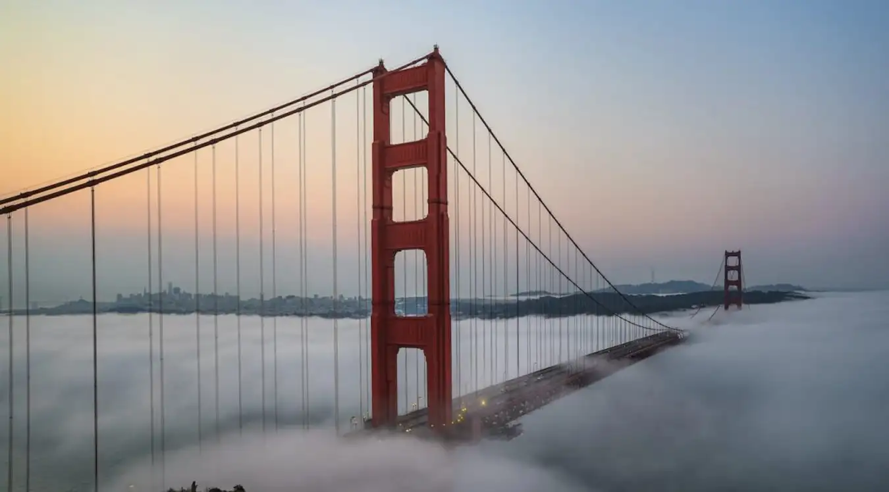

Cầu Cổng Vàng nằm trong danh sách những địa điểm thu hút lượng lớn khách du lịch tại thành phố San Francisco với vẻ đẹp tuyệt vời của nó. Khi đến tham quan cầu, du khách sẽ được chiêm ngưỡng khung cảnh vô cùng ấn tượng của cầu treo dài giữa những dải mây trên Vịnh San Francisco.
Không có gì thỏa mãn hơn khi bạn được chứng kiến sự hùng vĩ và choáng ngợp của cây cầu treo này. Đặc biệt, khi ánh nắng mặt trời chiếu sáng vào buổi sáng hoặc hoàng hôn vào chiều tối, vẻ đẹp của cây cầu trở càng trở nên rực rỡ khiến du khách trầm trồ.